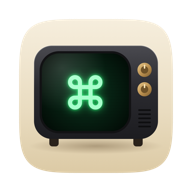

Share to Mac TV
Install Mac TV on this phone. It then appears in the Share menu of YouTube, Netflix, Chrome and other apps, and what you share opens on your TV.
- Tap Chrome's ⋮ menu.
- Tap Add to Home screen, then Install.
Mac TV is in your Share menu. Share a link from any app and choose Mac TV.
This phone doesn't know your Mac yet.
Open Mac TV's phone remote, then Settings › Add to Share menu.